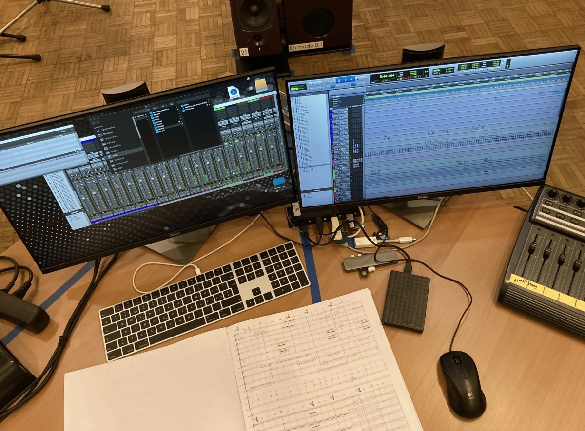

Analyse · harmonie · écriture
Analyse et écriture musicale
Comprendre les relations entre accords, voix, timbres et forme, puis utiliser ces observations dans une composition, un arrangement ou une lecture personnelle.

01
Point de départ
La théorie au contact d’un problème musical.
La séance peut partir d’un exercice, d’une œuvre, d’une chanson, d’une partition ou d’un passage de votre propre composition. L’objectif n’est pas d’accumuler des termes, mais de rendre la théorie utile à l’écoute et à l’écriture.
Consolider les bases
Fonctions, tonalité, cadences, conduite des voix et contrepoint peuvent être repris progressivement.
Analyser une œuvre
Observer comment le matériau, l’harmonie, le timbre et les proportions construisent un langage et une trajectoire.
Appliquer à votre écriture
Tester immédiatement une notion dans une correction, une variation, une orchestration ou un arrangement.
02
Domaines
Ce que nous pouvons examiner.
- Harmonie : fonctions, couleurs, tensions, progressions et enchaînements.
- Conduite des voix : basse, contrepoint, équilibre vertical et continuité horizontale.
- Analyse musicale : forme, énergie, langage, texture et orchestration.
- Écriture : correction, variation, arrangement et mise en pratique dans une pièce.
Le répertoire étudié peut être choisi en relation avec vos goûts, votre cursus ou le problème que vous rencontrez.
03
Documents
Ce que vous pouvez envoyer.
- exercice d’harmonie ou de contrepoint ;
- partition, lead sheet ou grille d’accords ;
- œuvre ou morceau à analyser ;
- extrait de composition, arrangement ou maquette audio.
La séance peut associer lecture de partition, écoute et correction écrite à l’écran.
04
Format
Une heure pour comprendre et appliquer.
La séance se déroule en ligne, en français. Les notions sont expliquées au niveau nécessaire, puis mises en relation avec une partition ou un travail concret.